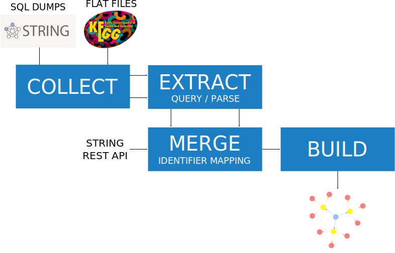

Workflow



1. Collect the data
- Download the STRING database dumps
- Full database
- database.schema.v10.5.pdf (121.3 kB) - Database scheme
- items_schema.v10.5.sql.gz (4.9 GB) - part I: the players (proteins, species, COGs,…)
- network_schema.v10.5.sql.gz (41.3 GB) - part II: the networks (nodes, edges, scores,…)
- evidence_schema.v10.5.sql.gz (6.9 GB) - part III: interaction evidence (but: excluding license-restricted data, such as KEGG pathways)
- Database subsets
- Mus musculus (mouse): STRING_mouse.zip (131 MB)
- Homo sapiens (human): STRING_human.zip (117 MB)
- Full database
- Load the dumps into a PostgreSQL database
- Download KEGG data for a certain species
partially automated
2. Extract the information from the data
- Derive the information we are interested in (e.g. for Homo sapiens or Mus musculus)
- Query the PostgreSQL database from STRING
- Parse the downloaded KEGG PATHWAY data
automated (testing)
3. Merge KEGG PATHWAY and STRING
4. Build a graph database
- Turn the extracted information into Neo4j graph database (using our defined database scheme)
- Example: Neo4j database dump for Homo sapiens (human): neo4j_human.dump (1.2 GB)
- Build a separate graph for each of the species in the same database (add species label to the nodes)
- Visualize the graph database
automated (testing)
5. Use machine learning
- Do a classfication / functional prediction of various proteins
not automated